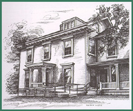

| performances |
| home page |
|
September 1999 32 LEW-16710 Program for Designing a Mechanical System This program offers advantages of ease of use, accuracy, efficiency, and speed April 1999 49 LEW-16622 Software for Minimizing and Removing Burrs in Manufacturing The overall costs of manufacturing precise components would be reduced. March 1999 34 LEW-16583 Improvememnts in Generating and Using Unstructured CFD Grids A grid-generation code accepts data from CAD software. December 1998 44 LEW-16601 Designing With help of Neural-Network and Parallel Computing Large design problems can be solved faster and more efficiently than before. December 1998 52 LEW-16582 Software for Analysis and Design of Turbomachinery These programs can be used to design seals to imporve overall machine performance. March 1997 30 LEW-16323 Computing Off-Design Performances of Axial-Flow Turbines A revised code incorporates improved mathimatical models of flows and losses. |
|  |
 |
History is an interactive account of events; every image within it is a passing approximation. Levin (us) Professor in Film Studies at Princeton University Friday, 8. Artists and cultural scientists are therefore increasingly reflecting upon the political, ideological, ethical and aesthetic dimensions of software and software design. The transmediale competition for 'software art' pays tribute to this development. Under discussion are the artistic chances and risks of interactive projects, as well as the rules under which interface design functions. |
 |